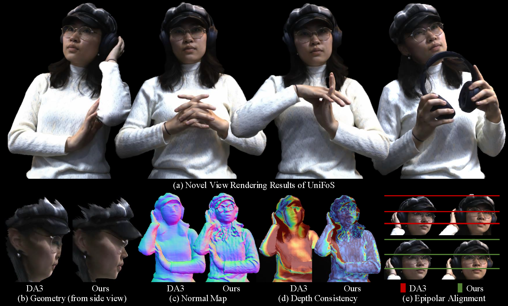
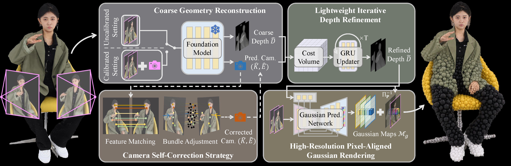

1Harbin Institute of Technology 2Tsinghua University 3Pengcheng Laboratory
✉Corresponding author †Project Lead

We propose UniFoS, a feed-forward framework that unifies 3D foundation priors with stereo geometry for real-time human Gaussian Splatting at 2K resolution under both calibrated and uncalibrated settings. (a) UniFoS performs 2K-resolution novel view synthesis at up to 30 FPS. By complementing the predictions of 3D foundation models (e.g., DA3) with explicit geometric constraints, our method recovers (b) fine geometric details (also shown in (c) normal map), improves (d) depth consistency and (e) epipolar alignment. Conversely, 3D foundation models provide reliable initialization and enable UniFoS to work without camera calibration. Note that (d) is evaluated with forward-backward disparity consistency and quantified with pixel error, where a hotter color represents a larger value, and (e) indicates how corresponding pixels deviate from the epipolar lines induced by the predicted cameras.

Overview of UniFoS. Our method takes binocular upper-body images as input and their corresponding camera parameters as optional conditions. The input pairs are first fed to a 3D foundation model for coarse depth estimation. Then undergo a lightweight depth refinement module to introduce geometric constraints into foundation predictions. Finally, a high-resolution pixel-aligned rendering module regresses pixel-aligned Gaussian maps from the refined depths and source appearance, which are then lifted to 3D space and aggregated for real-time rendering. The camera self-correction is necessitated under the uncalibrated setting to ensure the framework remains effective.
@inproceedings{
}